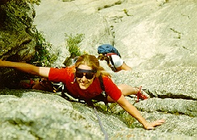

Located north of Vale Park, Lumpy Ridge is a veritable garden of interesting and challenging routes for climbers of all ages and abilities. Lumpy Ridge is a three mile long granite ridge containing over 400 different climbing routes with names ranging from the "Bowel's of the Owls" to the "J Crack." Guides from The Colorado Experience will be happy to lead you and your party to some of the most sought-after climbing routes in the country.

Difficulty Level: Beginner to expert depending on climber
Time: Half day and full day options
Physical stress: Mild to extreme, depending upon climb